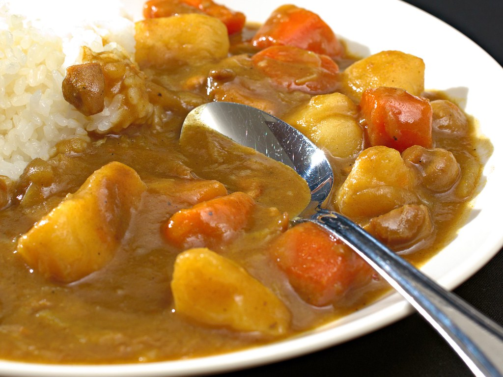

Home
Simple Japanese Curry Smoothie

Description:
This is a simple chicken japanese curry that I used often! Make sure to have rice upon making it!
Ingredients:
- 1 Kg of Chicken Breast
- 1/2 cup of Onions
- 3 Cups of Water
- 1 tablespoon of garlic paste
- 1 tablespoon of ghee
- 8 Japanese Curry Cubes
Steps:
- Put the instant pot in saute mode, and add ghee in it
- Add onions and garlic paste, and let it cook until the onions become translucent
- Add the chicken breasts, and cook until the outisde is cook.
- Add 3 cups of water
- Put the instant mode on pressure cook for 15mins
- Let the instant pot natural release for 10mins
- Upon opening, stir the curry!